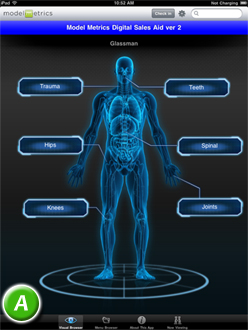

Document Version: 1.0, Last Update: 15 July 2011
Welcome to the Salesforce Services Digital Sales Aid! Thank you for purchasing this product. This guide provides an overview of the application and covers the process of configuring the Digital Sales Aid software for your organization.
This guide contains the following sections:
Overview
Features
Requirements
Support
Configuration
-Salesforce.com Plug-in Installation
-Overview of App Config and Category Config Tabs
-App Config Tab (Title, Top-Level Categories, Look and Feel of Home Screen)
-Main Application Settings
-Background and Category Button Settings
-Zoom View
-Category Config Tab(Category Look and Feel, Sub-Categories, Background Images)
-Category Settings
-Category Image Configuration
Frequently Asked Questions
The Salesforce Services Digital Sales Aid Customer Guide is a mobile counterpart to your Salesforce account. Digital Sales Aid takes your salesforce.com product data and places it in a highly visual, colorful, and easy-to-navigate mobile format for the Apple iPad tablet. Sales staff equipped with iPads can now present the most up-to-date information on your products—such as PDF files, Word documents, PowerPoint presentations, high-resolution photos, and even videos—directly to customers when they’re out in the field. Although data is kept up to date, content can be viewed offline if no Internet connection is available.
Digital Sales Aid is easy to set up by administrators and just involves setting a few options on the salesforce.com Web site.
Note: For demonstration purposes, the screenshots in this guide show DSA customized for a fictional life sciences organization which sells medical equipment.
DSA consists of two basic navigation screens:

(A) The primary screen, referred to as the Home Screen, contains your organization's high-level product categories. (Sub-categories can also be created).
(B) Whenever a category is selected, a Product Detail screens appears showing the products in each category. Users can view the different products in that category by clicking on an image of the product in the Product Gallery at the bottom of the screen. Each product contains a brief description as well as related content viewable directly on the iPad (documents, images, videos, etc.)
Digital Sales Aid offers the following features:
1. The most relevant product information placed directly into the fingertips of sales representatives and clients in an attractive, highly visual package.
2. Easy configuration via pre-existing Salesforce.com product categories and media content. Support for custom logos, art, images, and branding.
3. Full support of existing Adobe PDF, Word, PowerPoint, and video.
4. All content is downloaded to device upon the first user login or whenever the Synchronize button is pushed--no Internet connection is required.
5. Documents can be sent as attachments via e-mail, and field reps can rate their usefulness.
6. Sales representative activity tracking, including:
The following is required to install and use Digital Sales Aid:
1. Any generation iPad. Both wifi-only and 3G models are supported.
2. Salesforce.com (SFDC) access with:
<to be done>